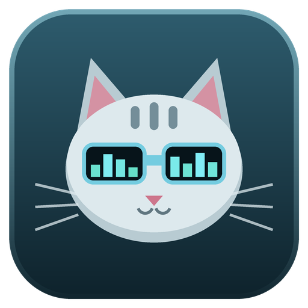

<!doctype html>
<html lang="en"><meta charset="utf-8"><title>Cranamp — Google Play feature graphic</title>
<style>
*{box-sizing:border-box}html,body{margin:0;width:1024px;height:500px;overflow:hidden}
body{color:#e8f5f5;background:#102b35;font-family:Arial,sans-serif}
main{height:500px;padding:65px 62px;display:flex;align-items:center;gap:58px;background:radial-gradient(ellipse at 92% 10%,#2f6673 0,transparent 58%)}
.icon{width:304px;height:304px;flex:none}h1{margin:0 0 21px;font-size:82px;letter-spacing:-4px;font-weight:750}p{font-size:30px;line-height:1.35;margin:0 0 31px;color:#c5e4e6}
.features{font-size:17px;letter-spacing:2px;color:#72ded3;line-height:1.8}small{display:block;font-size:17px;letter-spacing:.4px;color:#c5e4e6;margin-top:5px}
</style><main><section><h1>Cranamp</h1><p>Your music.<br>Your pixel canvas.</p><div class="features">WSZ SKINS · SKIN STUDIO</div><small>Music player built in Rust</small></section></main></html>
